7.1 Tìm kiếm và thay thế
Trong khi soạn thảo một đoạn văn, văn bản có những từ hay cụm từ mà bạn muốn tìm kiếm hay thay thế nó bằng một từ, cụm từ khác. Rất đơn giản với vài thao tác, bạn chọn Tab Home -> group Editing
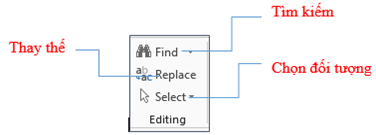
7.1.1 Tìm kiếm
Để tìm kiếm một từ hay cụm từ, bạn chọn Tab Home -> group Editing -> Find -> gõ từ hay cụm từ bạn muốn tìm vào ô Search document ( Find what trong Advance Find ) – Hoặc gõ tổ hợp phím tắt Ctrl + F
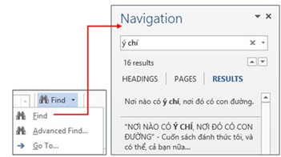
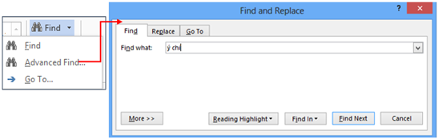
Hình 4.59. Hộp thoại Find and Replace
7.1.2 Thay thế
Tương tự như tìm kiếm, bạn muốn thay thế một từ hay cụm từ trong đoạn văn bản, bạn bôi đen từ/ cụm từ -> chọn Replace trong group Editing của Tab Home – Hoặc gõ tổ hợp phím tắt Ctrl + H
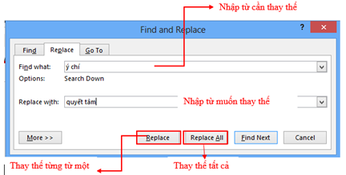
7.2 Cài đặt các chế độ tự động - AutoCorrect
Mỗi khi sử dụng Word, bạn thường lo lắng mình gõ sai hoặc viết sai ngữ pháp (nếu dùng tiếng anh hoặc các ngôn ngữ khác), tuy nhiên, đừng lo gì cả bởi Word cung cấp một số tính năng kiểm tra - bao gồm công cụ kiểm tra ngữ pháp và chính tả - giúp bạn tạo tài liệu một cách chuyên nghiệp và không phạm lỗi.
Trong tab
Review, nhấp chọn Spelling
& Grammar.
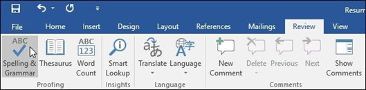
Hình 4.60. Các chế độ AutoCorrect
Bảng Spelling and Grammar sẽ xuất hiện ở phía bên phải. Đối với mỗi lỗi trong tài liệu, Word sẽ đưa ra một hoặc nhiều gợi ý. Bạn có thể chọn một trong các gợi ý hoặc nhấp Change để sửa lỗi.
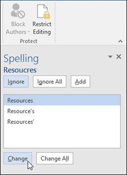
Word sẽ di chuyển qua từng lỗi cho đến khi bạn xem lại tất cả. Sau khi lỗi cuối cùng được xem, một hộp thoại sẽ xuất hiện xác nhận rằng việc kiểm tra chính tả và ngữ pháp đã hoàn tất. Nhấp chọn OK.
Nhưng chức năng này chỉ phù hợp với các văn bản tiếng Anh, còn với tiếng Việt hiện tại chưa được update.
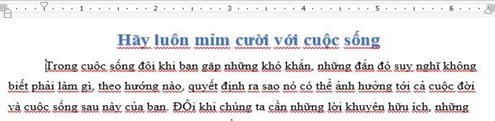
Vì vậy khi ta soạn thảo tài liệu thì những đường kiẻm tra lỗi lại gây phiền toái, nên thường chúng ta muốn bỏ nó đi. Để loại bỏ những chức năng kiểm tra lỗi này, bạn vào Tab File -> Option -> Proofing -> When correcting spelling and grammar in Word -> bỏ chọn các chức năng kiểm tra lỗi.
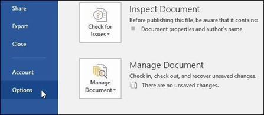
Một hộp thoại sẽ hiện ra. Ở phía bên trái hộp thoại, nhấp chọn Proofing. Tại đây có một vài tùy chọn. Ví dụ: Nếu bạn không muốn Word đánh dấu các lỗi chính tả, lỗi ngữ pháp hoặc các từ thường xuyên bị nhầm lẫn một cách tự động, bạn chỉ cần bỏ tích những tùy chọn mình muốn.
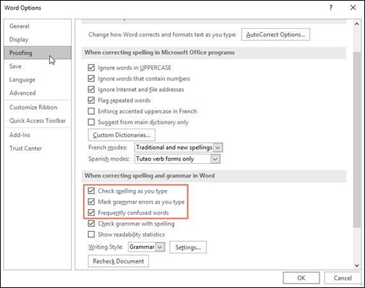
7.3 Định dạng nhanh bằng Style
Trong quá trình soạn thảo văn bản, có những nội dung có định dạng giống nhau, nếu định dạng lần lượt cho từng nội dung riêng sẽ mất nhiều thời gian và không nhất quán. Một trong những cách đơn giản để thực hiện điều này là dùng Style.
Style là một tập hợp các định dạng được tạo trước và có một tên. Style rất cần thiết khi soạn thảo giáo trình hoặc tài liệu có nhiều mục, nhiều loại văn bản khác nhau.
Style có thể áp dụng cho cho đoạn văn (Paragraph), cho ký tự (Character) hoặc cả hai (Linked). Word có sẵn các Style mặc định, người dùng có thể định nghĩa thêm Style. Các Style được chứa trong trong Group Styles trên thanh Ribbon của tab Home.
Bội đen đoạn văn bản muốn gán Style, trong nhóm lệnh Styles của tab Home nhấn chọn kiểu Style mong muốn:
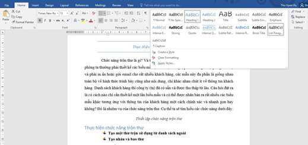
Hình 4.61. Chọn Style có sẵn của Microsoft Word
7.3.2 Tạo mới Style
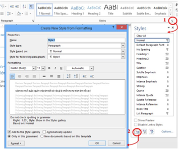
Hình 4.62. Tạo một Style mới
Người dùng chọn mở rộng Style trong nhóm Styles (số 1). Click biểu tượng New Style (số 2)
Chọn khối văn bản cần định dạng, sau đó chọn Style đã tạo ở trên (dntu_style), lúc này khối văn bản sẽ có định dạng giống như được thiết lập trong dntu_style:
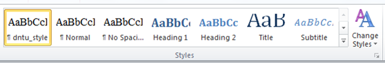
Hình 4.63. Gán Style cho khối văn bản
7.3.4 Chỉnh sửa Style
Để hiệu chỉnh Style, ta bấm chuột phải vào Style/chọn Modify (sẽ xuất hiện màn hình chi tiết để thay đổi định dạng giống như ở mục tạo mới Style, tại đây ta đổi các thông số theo nhu cầu cụ thể):
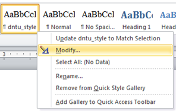
Hình 4.64. Chỉnh sửa Style
=> Tương tự ta có các chức năng ở trong màn hình 4.64:
- Rename…: Đổi tên Style
- Remove from Quick Style Gallery…: Xóa Style khỏi danh mục
- Add Gallery to Quick Access Toolbar: Đưa Style này vào thanh Quick Access Toolbar
Khi người dùng muốn viết một văn bản theo quy định chuẩn nào đó như: viết đơn tìm việc, hay những biểu mẫu: Danh thiếp, thư ngỏ, … Không phải ai cũng có kinh nghiệm trong việc viết đơn tìm việc hay làm các biểu mẫu. Chính vì lý do đó Word đã làm sẵn cho chúng ta các biểu mẫu, các quy chuẩn chung nhất cho một nghành nghề nhất định. Chẳng hạn như mẫu đơn tìm việc, nếu ứng viên nào trình bày chuyên nghiệp và có đầu tư thì đó là lợi thế của ứng viên. Sau đây là một số kiến thức liên quan tới việc thiết lập biểu mẫu.
Template là một tập tin mẫu, cho phép tạo một tập tin mới với mẫu đã được tạo sẵn. Tập tin mẫu có thể bao gồm tiêu đề, logo, những định dạng khác. Tập tin mẫu có phần đuôi là .dotx.
- Trong Word có sẵn các tập tin Template, ta có thể sử dụng bằng cách:
Chọn FileàNewàSample Templates xuất hiện cửa sổ Template, chứa các mẫu Template, Chọn một mẫu phù hợp với nội dung của tài liệu sau đó chọn tiếp:
- Document chọn Create để sử dụng Template.- Template chọn Create để sửa Template từ Template có sẵn.
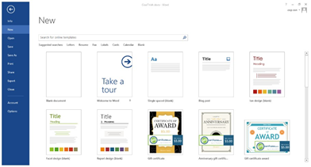
Hình 4.65. Màn hình lựa chọn Template
- Để tạo kiểu mẫu mới:
Người dùng thiết kế một mẫu để sử dụng làm mẫu cho những tài liệu sau à vào tab File/ Save As / chọn nơi lưu
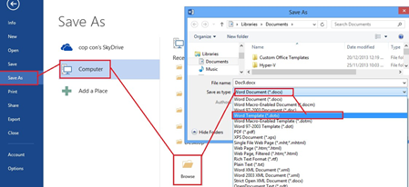
Hình 4.66. Hộp thoại tạo template mới
- Trong hộp thoại Save As à Save as type à chọn Word Template (*.dotx).
- Tự động đường dẫn lưu trữ các Template sẽ được trỏ đến, nhưng bạn cũng có thể lưu tại nơi bạn muốn.
- Và khi bạn muốn sử dụng chỉ cần vào à Tab File à New àPersonal à chọn Template bạn cần.
Ví dụ ta cần tạo template cho danh thiếp dưới đây:
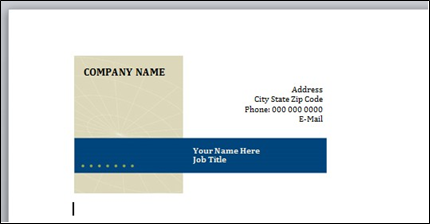
Giả sử ta lưu mẫu trên với tên “Tao_Template_moi.dotx”, như vậy mỗi lần tạo một tài liệu mà ta chọn mẫu là “Tao_Template_moi.dotx” thì ta sẽ có tài liệu giống như mẫu trên.
Xem hình xuất hiện tên mẫu mới sau khi đã lưu template trên (hình 1-43)
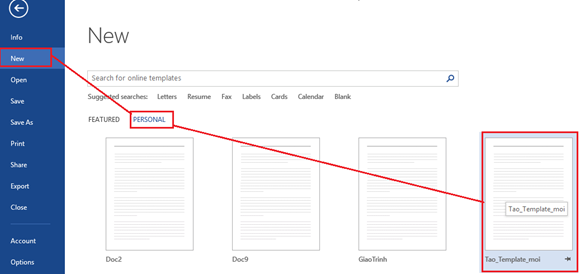
Hình 4.67. Mẫu Template mới vừa tạo
- Tải kiểu mẫu có sẵn của Microsoft:
Microsoft cung cấp rất nhiều mẫu cho người sử dụng: Mẫu tổ chức sự kiện, thư ngỏ, danh thiếp, đơn tìm việc … (yêu cầu phải kết nối internet). Trên thanh tìm kiếm ở màn hình lựa chọn Template, người dùng chọn vào tên các nhóm mẫu và chọn một mẫu phù hợp với nội dung cần soạn thảo.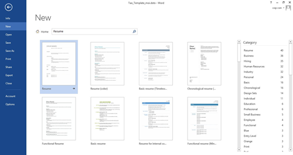
Hình 4.68. Chọn mẫu Temple sẵn có